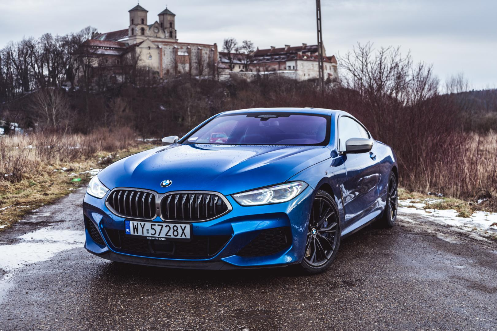
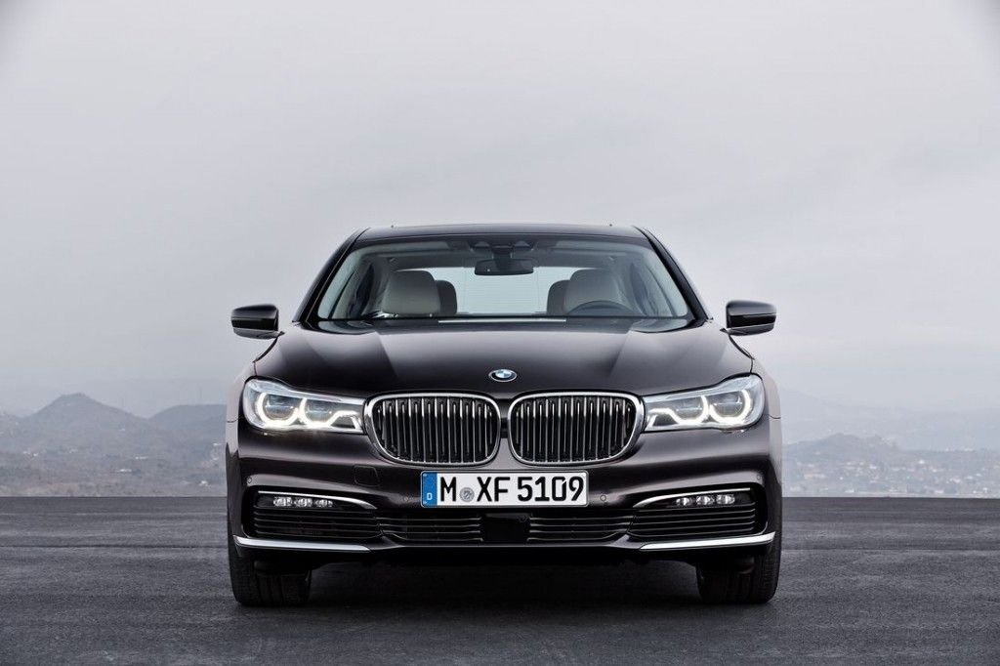
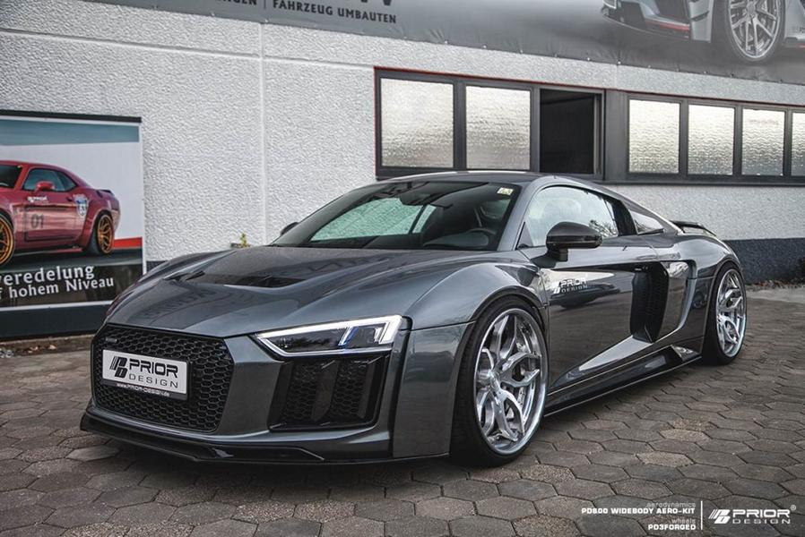
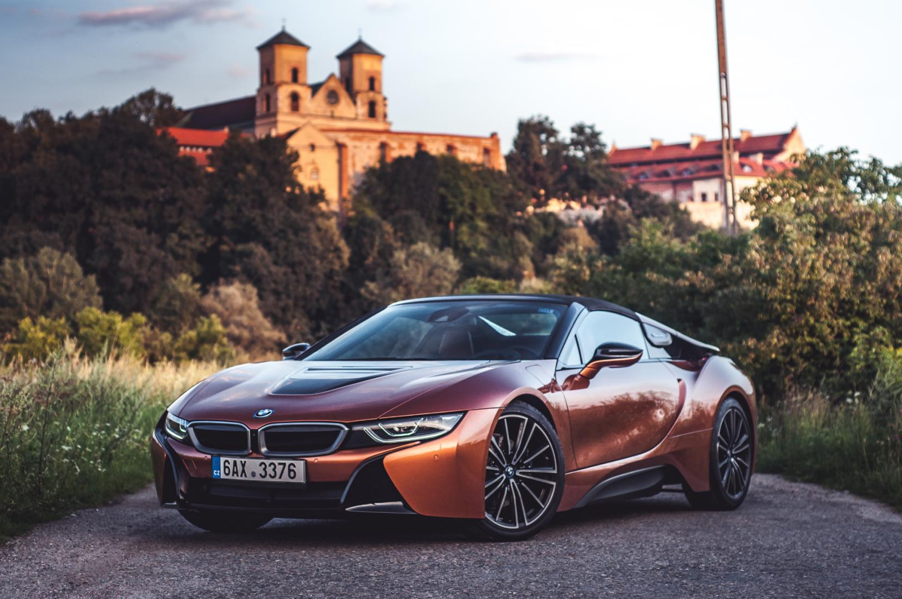

BMW Seria 8 II M Coupe 4.4 M850i M
BMW serii 7 G12 750Li xDrive (2016)


Lekka konstrukcja, wydajne silniki, nowoczesne wyposażenie, Pod maską nie znajdziemy już silnika V12, jak w serii 8 z lat
a to wszystko okraszone w znajome kształty - tak można dziewięćdziesiątych ubiegłego wieku. Silnik 4.4 V8 TwinPower
podsumować kolejną odsłonę BMW serii 7. Turbo, generujący 530 KM i 750 Nm.
AUDI R8
BMW i8


BMW i8 posiada nadwozia typu coupe oraz roadster. Moc
Audi R8 to sportowy samochód z 2-miejscowym i 2-drzwiowym
maksymalna wynosi 170 kW, a licząc w koniach mechanicznych
nadwoziem coupe (należącym do segmentu F), Moc maksymalna
moc modelu BMW i8 wynosi 231 KM. Silnik BMW i8 jest
wynosi od 309 do 456 kW, a licząc w koniach mechanicznych moc
rzędowy posiadający 3 cylindry o pojemności 1499 cm3.
modelu AUDI R8 wynosi od 420 do 620 KM.